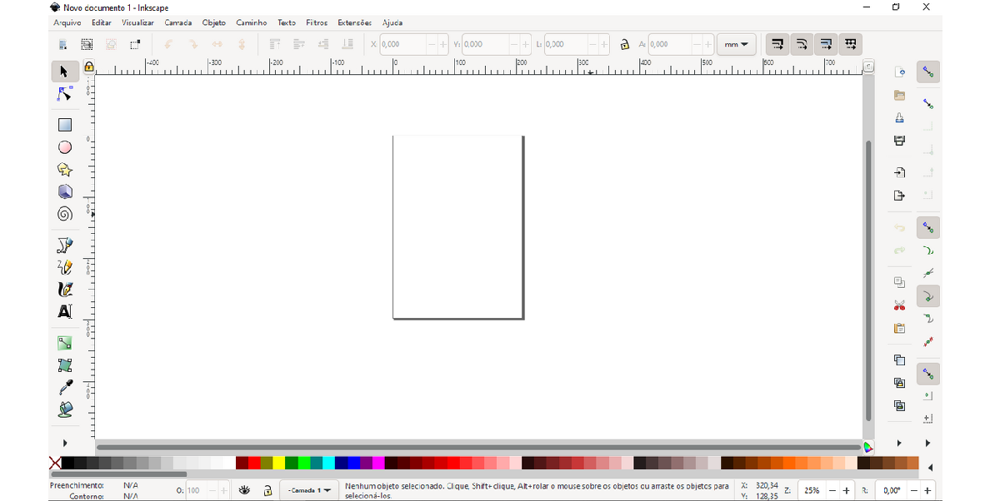

Outro setor promissor na área de informática é o Design Gráfico, um amplo setor que engloba nichos como publicidade e propaganda, ilustração, animação, criação de páginas web, design de embalagens, desenho técnico entre vários outros. Existe uma gama enorme de softwares de design gráfico, entre eles os mais conhecidos são:
Gratis:
☛ GIMP – Software de manipulação de imagem.
☛ Inkscape – Software de desenho vetorial.
☛ Krita – Software de ilustração, cartoon e animação.
☛ OpenToonz – Software de animação.
Pagos:
☛ Adobe Photoshop – Software de manipulação de imagem.
☛ Adobe Illustrator – Software de desenho vetorial.
☛ CorelDraw – Software de desenho vetorial.
☛ Indesign – Software de diagramação profissional.
☛ Powerpoint – Software de criação de apresentações de slide.
☛ Publisher – Software de diagramação profissional.
Desenho Técnico e Modelagem 3D (Pagos)
☛ Autodesk AutoCAD – Desenho Técnico
☛ Autodesk Revit – Desenho técnico BIM e Modelagem 3D
☛ 3D Studio Max – Modelagem e Animação 3D
☛ 3D Studio Maya – Modelagem de Personagens e Animação 3D
☛ Trimble SketchUp – Modelagem 3D
Ao abrir a aplicação, você terá uma tela inicial semelhante a esta:
Vamos experimentar um pouco de desenho vetorial com o software gratuito e de código aberto Inkscape. Entre no site oficial do Inkscape na internet e efetue o download específico para seu sistema operacional no site:
inkscape.org/pt-br/ No lado esquerdo da tela temos a Barra de Ferramentas onde encontramos várias ferramentas para desenhar. No meio da tela temos o espaço de trabalho com uma página no centro. Acima do espaço de trabalho temos a Barra de Propriedades, onde podemos alterar as propriedades de praticamente tudo que desenhamos. Abaixo do espaço de trabalho temos a paleta de cores.
Vamos fazer um dos desenhos mais simples que existem, a bandeira do Brasil!
1. Procure na Barra de Ferramentas a ferramenta retângulo e clique.
2. Clique e arraste na tela para desenhar um retângulo.
3. Clique na ferramenta seleção e selecione o retângulo que criou.
4. Na Barra de Propriedade altere a largura para 100 e a altura para 50.
5. Clique no verde-escuro da paleta de cores.
1. Procure a ferramenta “Polígonos e Estrelas” e clique.
2. Na Barra de Propriedade altere o tipo para polígono regular.
3. Na quantidade de lados digite 4 e pressione Enter.
4. Com a tecla Control pressionada, clique na tela e arraste para cima para desenhar o losango no ângulo correto.
5. Pegue a ferramenta seleção e selecione o losango.
6. Altere a largura para 100 e a altura para 50.
7. Clique na cor amarela.
1. Clique na ferramenta elipse.
2. Com a tecla Control pressionada, clique e arraste para desenhar um círculo.
3. Altere a largura e a altura para 40.
4. Clique na cor azul mais escura.
1. Com a ferramenta seleção, clique e arraste abrindo uma seleção sobre todos os objetos, se alguns estiverem fora da tela, diminua o zoom rodando a scroll para trás com a tecla Control pressionada. Você pode ainda selecionar um por um mantendo a tecla Shift pressionada e clicando sobre eles.
2. Clique no menu Objeto e selecione a opção Alinhar e Distribuir, lá no final.
3. Na janela que abrirá, em Alinhamento, selecione “Centralizar no Eixo Vertical” e “Centralizar no Eixo Horizontal”.
4. Está pronto o desenho! Se quiser você pode ainda exportar como imagem. Basta, com tudo selecionado, clicar no menu Arquivo, selecionar Exportar Imagem, e na janela de exportação clicar em Exportar Como, então alterar o local, o nome do arquivo e definir o tipo como JPEG.
Claro que nossa bandeira ainda tem outros elementos como a faixa branca com o título “Ordem e Progresso” e as estrelas, no entanto são elementos que levariam mais tempo pois necessitam de recursos como intersecção e subtração de objetos que fugiriam do escopo desta apostila.
Sugiro que brinque bastante com o Inkscape lendo tutoriais na internet, muita coisa bacana pode ser feita com esse software por quem adquire prática em seu uso, como por exemplo cartuns, paisagens, desenhos de personagens e muito mais. Você pode até mesmo participar da comunidade de usuários e tirar dúvidas.
Caso prefira se aprofundar de maneira profissional no ramo do design gráfico sugiro fazer o Curso Completo de Design Gráfico em JorgeOliveiraSantos.github.io, onde você aprenderá a trabalhar com softwares como Inkscape, Krita, CorelDraw, Illustrator, Photoshop, Publisher, Powerpoint. E aprenderá conceitos de design para desenho artístico profissional, diagramação e artes visuais para publicidade.